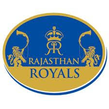
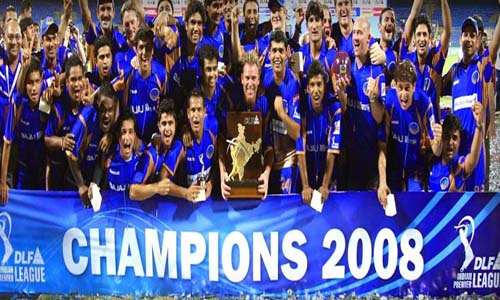
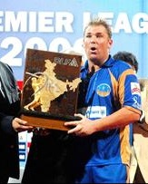
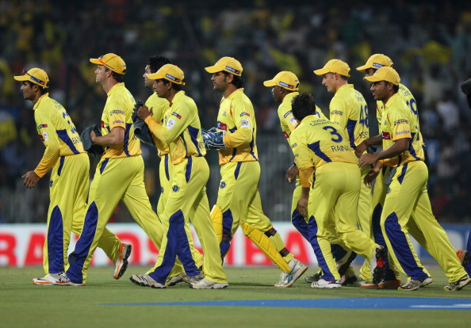
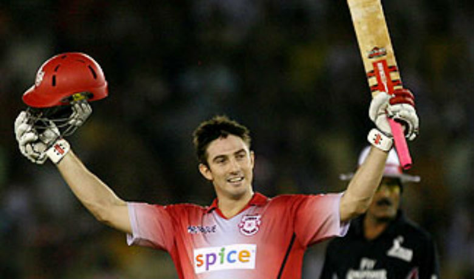
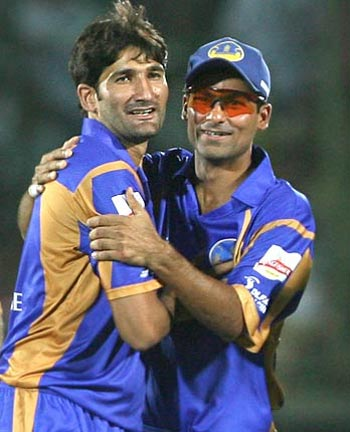
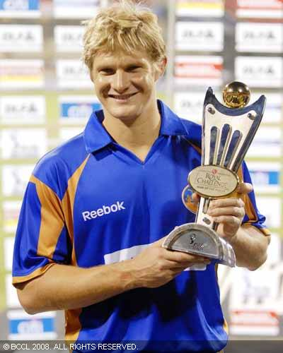

DLF IPL 2008

*Winner: Rajasthan Royals

*Team Squad: (Captain - Shane Warne)


(Click the above pic for viewing the Highlights of the IPL Final 2008)
Shane Warne, Swapnil Asnodkar, Md. Kaif, Yusuf Pathan, Ravindra Jadeja, Munaf Patel, Mahesh Rawat, Siddharth Trivedi,
Dinesh Salunke, Niraj Patel, Taruwar Kohli, Pankaj Singh, Anup Revandkar, Aditya Angle, Sumit Khatri, Parag More, Jaydev Shah,
Greame Smith, Shane Watson, Sohail Tanvir, Dimitri Mascarehnas, Kamran Akmal, Younis Khan, Morne Morkel, Justin Langer, Darren Lehmann.
*Runner ups: Chennai Super Kings

*Team Squad: (Captain - MS Dhoni)

M.S.Dhoni, Suresh Raina, Parthiv Patel, Palani Amarnath, Manpreet Gony, Subramaniam Badrinath, Joginder Sharma, Viraj Vilas Kadbe, Srikanth Anirudhha,
R. Ashwin, Napoleon Einstein, Vidyut Sivaramakrishnan, Lakshmipathy Balaji, Shadab Jakati, Arun Karthik, Suresh Kumar, Abhinav Mukund, Albie Morkel,
Stephen Fleming, Muttiah Muralitharan, Makhaya Ntini, Jacob Oram, Matthew Hayden, Michael Hussey.
*Orange Cap Winner: Shaun Marsh(AUS) : 11 Matches 616 Runs - Kings XI Punjab

(Click for viewing the video 'Race for the Orange cap 2008')
*Purple Cap Winner: Sohail Tanvir(Pak) : 11 Matches 22 Wickets - Rajasthan Royals

(Click for viewing the video 'Race for the Purple cap 2008')
*Player of the Series: Shane Watson - Rajasthan Royals
